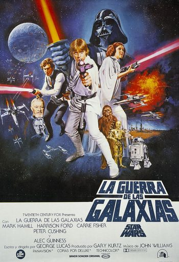
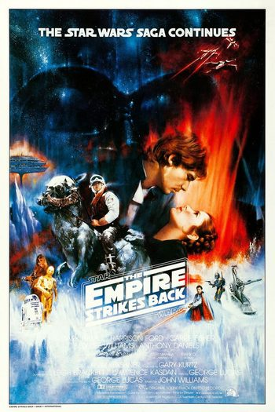
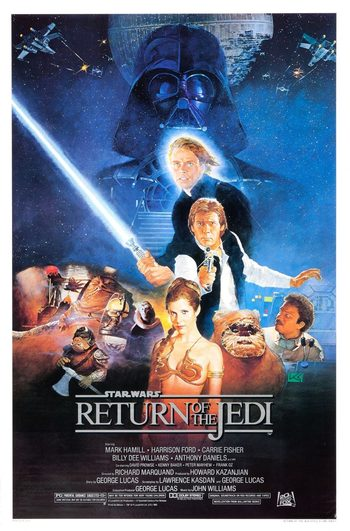
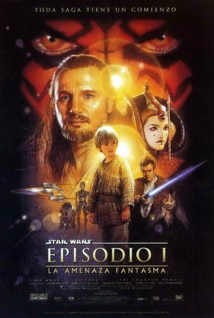
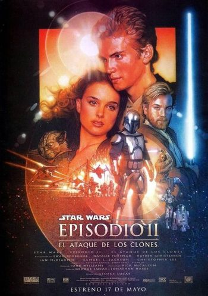
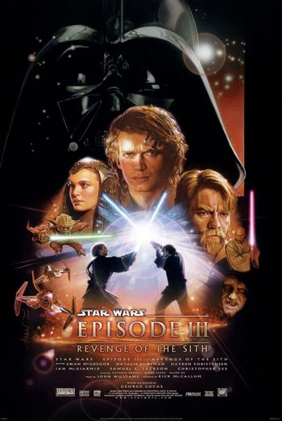

Cronología de la saga
Una guía para aprendices
Nueve películas, tres trilogías y más de cuarenta años de historia. En esta página recorrerás la saga en el orden en que llegó a los cines, desde 1977 hasta 2019.
Antes de empezar, el Consejo necesita saber algo importante: ¿de qué lado de la Fuerza estás?
Galería de la saga
Las nueve películas en el tiempo
Usa las flechas del teclado o los botones + y −.
-

1977
Episodio IV: Una Nueva Esperanza. Luke Skywalker deja Tatooine y se une a la Rebelión para rescatar a la princesa Leia.
-

1980
Episodio V: El Imperio Contraataca. Luke entrena con Yoda en Dagobah mientras el Imperio persigue a la Rebelión.
-

1983
Episodio VI: El Retorno del Jedi. La Rebelión ataca la nueva Estrella de la Muerte y Luke enfrenta su destino.
-

1999
Episodio I: La Amenaza Fantasma. Dos Jedi descubren a un niño llamado Anakin Skywalker en Tatooine.
-

2002
Episodio II: El Ataque de los Clones. Anakin, ya aprendiz, protege a Padmé mientras estalla la Guerra de los Clones.
-

2005
Episodio III: La Venganza de los Sith. Anakin cae al lado oscuro y la República se convierte en Imperio.
-
2015
Episodio VII: El Despertar de la Fuerza. Rey, una chatarrera de Jakku, descubre que la Fuerza también la llama.
-
2017
Episodio VIII: Los Últimos Jedi. Rey busca a Luke en un planeta remoto para aprender de él.
-
2019
Episodio IX: El Ascenso de Skywalker. La Resistencia libra la batalla final contra el regreso de Palpatine.